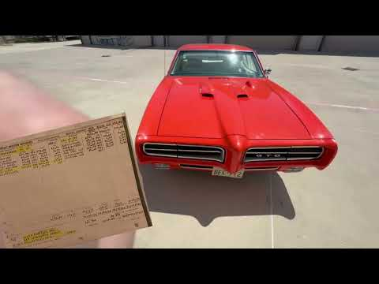

Al Diaz is an independent researcher who studies the early production and distribution of the 1969 Pontiac GTO Judge using Pontiac factory, dealer, shipping and period records.
His work centers on the January 1969 Carousel Red pattern cars and the DON 00017 pilot batch. He publishes what the papers show, says plainly what is still unknown, and dates every correction.
Readers with factory paperwork, period photos or corrections are invited to get in touch. Email OneJudge69@gmail.com or use the Submit Your Documents page.
Videos

1969 Pontiac GTO Judge – The Lead Production Car | Framingham DON 00017AI assistance was used to compile and format this site. Every claim was drawn from Al Diaz's research files and is labeled under his Research Standards & Evidence Policy v1.0. Corrections are welcome and will be dated.